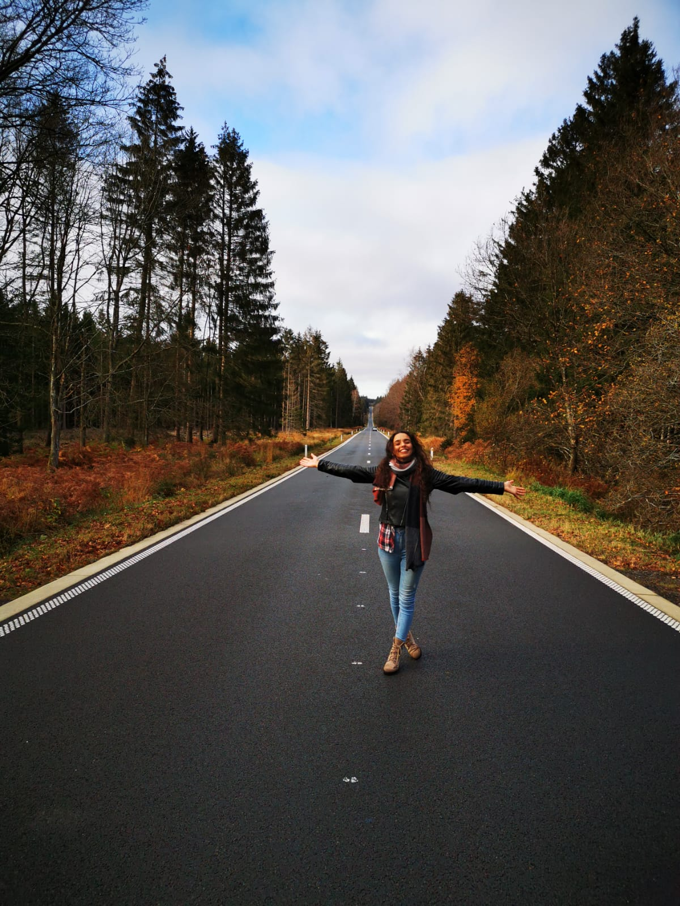

A journey of a thousand miles begins with a single step 🧡
Currently working at CERN, Organisation européenne pour la recherche nucléaire, and KBFI (Tallinn). InspireHEP · ORCID
Click to download my resume!
Work Experience
Postdoc in Particle Physics
2025–Present
CERN - The European Organization for Nuclear Research
Keemilise ja Bioloogilise Füüsika Instituut (KBFI/NICPB, Estonia) · ETIS profile
Postdoc in Particle Physics
2023–2025
CERN - The European Organization for Nuclear Research
University of Science and Technology of China
Education
Ph.D. in Particle Physics
2019–2023
UCLouvain, Belgium (CP3)
Advisor: Prof. Christophe Delaere
Dissertation: Search for 2HDM neutral Higgs bosons through ℓ⁺ℓ⁻bb̄ final states at CMS in Run 2 LHC data. [CERN Document Server] [UCLouvain]
M.Sc. in Condensed Matter Physics
2015–2017
Université de Tunis El Manar, Tunis
Thesis: Modélisation des performances des structures lasers à base des chalcogénures de métaux de transition : MoS2/WSe2. [arXiv:2310.12992]
B.Sc. in Physics and Chemistry
2012–2015
Université de Tunis El Manar, Tunis
Courses, Workshops & Conferences attended
- The 19th Workshop of the LHC Higgs Working Group 28–30 Nov 2022, CERN (remote).
- Georges Lemaˆıtre Chair lecture series: Tracy Slatyer on ”New probes of dark matter physics in astrophysics and cosmology”, 16-20 May 2022, UCLouvain (Belgium).
- 2022 Higgs workshop, 28-30 Mar 2022, CERN (remote).
- Third Intensive Course on Statistics for HEP. 7 janvier 2022 to 18 f ́evrier 2022, UCLouvain-CP3 (Belgium).
- Higgs 2021 (virtual), 18-22 Oct 2021.
- Taming the accuracy of event generators (Part 2), 23–27 Aug 2021, CERN (remote).
- CMS management training workshop (virtual), 17 June 2021.
- LHC Soft skills workshop: Interview skills for academia (virtual), 10 March 2021.
- Fast Machine Learning for Science Workshop, 30 November 2020 to 3 December 2020, Southern Methodist University US, (remote).
- CMS Monte Carlo and Physics Tools Tutorials 30 Oct 2020-30 Jun 2021, CERN (remote).
- Higgs 2020 (virtual), 26–30 Oct 2020.
- 4th Inter-experiment Machine Learning Workshop (virtual), 19–23 Oct 2020.
- FIPs 2020 Feebly Interacting Particles (virtual), 31 August 2020 to 4 September 2020.
- PyHEP 2020 (virtual) Workshop 13–17 Jul 2020.
- Higgs and Effective Field Theory - HEFT 2020 (virtual), 15–17 Apr 2020.
- 3rd Tracker Upgrade DAQ school, 2019, CERN.
- Physics Object School(POS), 2019, Aachen (Germany).
- Belgian Dutch German graduate school in particle physics BND 2019, SPA (Belgium).
- Statistics for High Energy Physics 24-28 June 2019 by Pietro Vischia. UCLouvain- CP3 (Belgium).
- CMS Induction Course, 2019, CERN.
- CMS Data Analysis School CMSDAS, 2019 Pisa (Italy).
- The Fourth Conference in Quantum Africa Series 30th of April to the 5th of May 2017, (Tunis).
- Physics Without Frontiers HEP course one month long taught remotely by Mario Campanelli from UCL, UK, with a series of lectures in person, (Tunis).
- The Day’s Young Researchers in Physics 2016, on the occasion of the centenary of the Theory of General Relativity, (Tunis).
Responsibilities
CMS Level-2 convener, Monte Carlo & Interpretation (MC&I)
Sep 2026 – Present
Co-lead the CMS group responsible for event generation, physics modelling and the interpretation of results across all physics analyses. I coordinate the production and validation of signal Monte Carlo samples and generator tunes for Run 3, oversee the prescriptions for theoretical uncertainties, and promote the reinterpretation and public release of CMS results (likelihoods, simplified models, analysis preservation) for the wider theory community.
LHC Higgs Working Group, WG3: Extended Higgs Sector subgroup convener
2024 – Present
Co-lead the cross-experiment (ATLAS, CMS, theory) effort on BSM extended scalar sectors, including 2HDM, singlet extensions and heavy resonances. I organize subgroup meetings and workshops, coordinate benchmark scenarios and recommendations for LHC searches, and contribute to the group's reports for Run 3 and the HL-LHC.
Bamboo framework development and maintenance
2023 – Present
A high-level HEP analysis library for ROOT::RDataFrame. Documentation
B-Tagging POG
2023 – 2025
Run 3 ParticleNet trigger path development and online-offline jet matching studies.
Tracker DPG
2021 – 2022
Code development of the SiStrip Cluster Parameter Estimator (CPE) and hit efficiency and resolution measurements.
BTV POG
2019 – 2020
B-tagging efficiency measurements with the 2TagCount method in ttbar dilepton events at 13 TeV.
Strip tracker shifter
CRUZET: Cosmic RUn at ZEro Tesla.
Work & Internship Experience
Supervision of two summer students
Jul – Aug 2024
Future Scientist Exchange Program (FuSEP), USTC.
Summer Student Programme, CERN
24 Jun – 17 Aug 2018, Geneva (Switzerland)
CERN ISOLDE Radioactive Ion Beam facility, under the direction of Heinz Haas and Joao Guilherme Martins Correia: Perturbed Angular Correlations and Hyperfine interactions of 111Cd isotope.
Physics teaching assistant (part time)
Sep – Dec 2018
The International School of Elite Education, Tunis. Physics courses (Electricity and Magnetism, Matter and the elements, Chemical bonds and molecular structure...) for second- and third-year students.
Student intern
Nov 2017 – Jul 2018
Laboratoire des matériaux avancés et des phénomènes quantiques (MPQ), Université de Tunis El Manar.
Internship
August 2013
Experimental Techniques in Chemistry Laboratory: High-Performance Liquid Chromatography (HPLC), Atomic Absorption Spectrometry (AAS), water analysis and control of raw materials. Poulina Group Holding (PGH), Tunis.
HEP Skills
Monte Carlo techniques (⋆5), Machine learning tools (⋆4), Data modeling (⋆5), Statistical techniques (⋆4).
(⋆ scale: 0 = basic → 6 = expert)